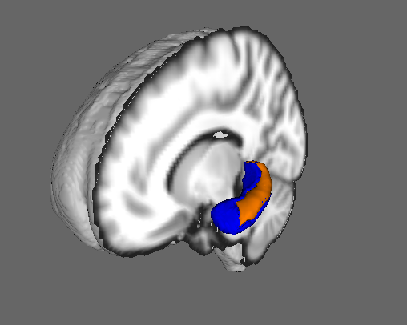

Contents
- Introduction
- User Guide
Segmentation using FIRST
The simplest way to perform segmentation using FIRST is to use the run_first_all script which segments all the subcortical structures, producing mesh and volumetric outputs (applying boundary correction). It uses default settings for each structure which have been optimised empirically.
run_first_all
This script will run lower-level utilities (including first_flirt, run_first and first) on all the structures, with the settings (number of modes and boundary correction) tuned to be optimal for each structure. Both mesh (vtk) and volumetric (nifti) outputs are generated. Corrected and uncorrected volumetric representations of the native mesh are generated. The final stage of the script ensures that there is no overlap between structures in the 3D image, which can occur even when there is no overlap of the meshes, as can be seen in the individual, uncorrected segmentation images in the 4D image file.
- Example usage:
run_first_all -i t1_image -o output_name
The argument -i specifies the original T1-weighted structural image (only T1-weighted images can be used).
The argument -o specifies the filename for the output image basename. run_first_all will include the type of boundary correction into the final file name. For example, the command above would produce output_name_all_fast_firstseg.nii.gz and output_name_all_fast_origsegs.nii.gz.
Note that this usage is very different from previous versions
The script is written such that if you have FSL setup to use local cluster computing it will automatically parallelise the fitting of each structure. Either way, it will create a log directory that contains the error outputs of each command, and you should check these. To do that simply do: cat *.logs/*.e*
and if there are no errors then you will see no output, otherwise you will see what errors have occured.
- Output
output_name_all_fast_firstseg.nii.gz : This is a single image showing the segmented output for all structures. The image is produced by filling the estimated surface meshes and then running a step to ensure that there is no overlap between structures. The output uses the CMA standard labels (the colour table is built into FSLView). If another boundary correction method is specified, the name fast in this filename will change to reflect the boundary correction that is used. Note that if only one structure is specified then this file will be called output_name-struct_corr.nii.gz instead (e.g. sub001-L_Caud_corr.nii.gz).
output_name_all_fast_origsegs.nii.gz : This is a 4D image containing the individual structure segmentations, converted directly from the native mesh representation and without any boundary correction. For each structure there is an individual 3D image where the interior is labeled according to the CMA standard labels while the boundary uses these label values plus 100. Note that if only one structure is specified then this file will be called output_name-struct_first.nii.gz instead (e.g. sub001-L_Caud_first.nii.gz).
output_name_first.vtk : This is the mesh representation of the final segmentation. It can be directly viewed in FSLView using 3D mode.
output_name_first.bvars: Do not delete this file. It contains the mode parameters and the model used. This file, along with the appropriate model files, can be used to reconstruct the other outputs. The mode parameters are what FIRST optimizes. This output can be used be used later as to perform vertex analysis or as a shape prior to segment other shapes.
- Options
-m specifies the boundary correction method. The default is auto, which chooses different options for different structures using the settings that were found to be empirically optimal for each structure. Other options are: fast (using FAST-based, mixture-model, tissue-type classification); thresh (thresholds a simple single-Gaussian intensity model); or none.
-s allows a restricted set of structures (one or more) to be selected. For more than one structure the list must be comma separated with no spaces. The list of possible structures is: L_Accu L_Amyg L_Caud L_Hipp L_Pall L_Puta L_Thal R_Accu R_Amyg R_Caud R_Hipp R_Pall R_Puta R_Thal BrStem.
-b specifies that the input image is brain extracted - important when calculating the registration.
-a specifies a pre-calculated registration matrix (from running first_flirt) to be used instead of calculating the registration again.
first_roi_slicesdir
first_roi_slicesdir is a script to generate summary images, in a webpage format, for the segmentation outputs. It is very useful for checking the quality of segmentations, especially when there are many subjects. It runs the script slicesdir on a region of interest (ROI) defined by a set of label images (e.g. output of FIRST). A set of temporary ROI images are created and then slicesdir is then run on those.
Usage: first_roi_slicesdir <list of t1_images> <list of label_images>
Example: first_roi_slicesdir *_t1.nii.gz *_all_fast_firstseg.nii.gz
General Advice and Workflow
Below is a recommendation for running FIRST in a systematic way. While it is only a recommendation, you may find that organizing your data in a different way than suggested below leads to complications further down the road, especially when moving files.
- Create a main directory in which the FIRST analysis will be carried out. The first step in analysis will be to copy all of the structural images to be segmented into this directory. All FIRST commands should be run in this directory. Subdirectories may be created to contain certain outputs (more later) but all input images should be placed in this main directory. The pathnames for files used as input options for all of the steps of FIRST should start in this directory and may include subdirectories as needed. The reason for this is that the pathnames of the structural input images are written into the bvars output files. When these bvars files are used (i.e. for vertex analysis), the original image must be able to be located. Inputting full pathnames is possible, but if you move the directory containing the structural images, the pathnames within the bvars files will have to be changed. Therefore, we recommend keeping all FIRST inputs and outputs in one main directory and keeping all pathnames relative to this directory. This way, if the entire directory is moved then the relative position of all input and output files will remain the same.
For example, imagine you have a directory called scratch, and you create a sub-directory called subcort. Start by copying all of your images into the subcort directory. Once this is done, all subsequent steps should be carried out from within the directory subcort.
Use a standardized naming system for all of your structural images and subsequent output files. For example, we will consider an experiment where there are 10 controls and 10 diseased subjects. In this case we name the structural images con01.nii.gz, con02.nii.gz, ..., dis01.nii.gz, dis02.nii.gz, ... and keep the base name part (i.e. con01) the same for all outputs of FIRST.
To run run_first_all on a group of subjects a simple "for" loop may be used from the command line: for i in 01 02 03 04 05 06 07 08 09 10 ; do run_first_all -i con${i} -o con${i} ; done A similar loop can then be run for the diseased subjects (dis01, ..., dis10). These commands could be put into one big for loop, but it is usually simpler to separate them, especially if you have a different number of subjects in each group.
- You then need to verify that the registrations and subsequent segmentations were successful. To start with, check that there are no errors in the log files by doing:
cat *.logs/*.e*
which will show no output if there are no errors. Once you've verified that there are no errors, then you can most easily check the results from a group of subjects using the relevant slicesdir tools.
- To check the registrations:
${FSLDIR}/bin/slicesdir -p ${FSLDIR}/data/standard/MNI152_T1_1mm.nii.gz *_to_std_sub.nii.gz
This command creates a directory called "slicesdir" which will contain a webpage output of the summary results for each subject's registration. Note that if the registration stage failed then the model fitting will not work, even though run_first_all will continue to run and generate output. Therefore it is critical to check the registration results.
On the webpage, each subject's registered image (*_to_std_sub.nii.gz) will be displayed in sagittal, coronal, and axial views, with a red outline showing the edges from MNI152_T1_1mm standard brain. Open this webpage in any web browser.
When assessing the registrations, pay particular attention to the sub-cortical structures. It does not matter if the cortex does not always align well, particularly where there are large ventricles, as it is the alignment of the sub-cortical structures which is important for the segmentation.
- To check the segmentations:
Firstly, fix any registration errors (see below for first_flirt and various options available) and re-run the segmentation using the new registration. After that the segmentation output can be inspected. This can be done using first_roi_slicesdir which generates a similar webpage, but this time showing the segmentations.
If there are any problems, you can try different segmentation options (e.g. number of modes, boundary correction method, etc.) using the individual tools described in the Advanced Usage section.
Vertex Analysis (with NEW features in v5.0.0)
- This section describes how to calculate vertex-wise statistics to investigate localised shape differences.
Vertex analysis is performed using first_utils in a mode of operation that aims to assess group differences on a per-vertex basis. It now uses randomise to do the statistical analysis. The simplest, and very common, design matrix is a single EV (regressor) specifying group membership (-1 for one group, +1 for the other group) together with a single F-contrast (also requiring a single t-contrast) which then tests for group differences in a two-sided (unsigned) test. Any of the many available multiple comparison correction techniques available in randomise can be used (some method of correction should be used if presenting results in a publication). The output is a 4D image that are can be processed via randomise. The image outputs from randomise use the standard naming conventions and display 1-p values (so that over 0.95 is "significant" at the 0.05 level). Results are only displayed on the structure's surface. An alternative mesh-based method (providing a base mesh that is the mean mesh for the first group and vectors that are the displacement vectors between group means), as was used in the previous versions of FIRST, is also available via the --surfaceout option.
Internally the vertex locations from each subject (at a corresponding anatomical point) are projected onto the surface normal of the average shape (of this particular cohort). The projections are scalar values, allowing them to be processed by univariate statistical methods (e.g. randomise). It is these projection values that are stored in the 4D file (one image per subject) and they represent the signed, perpendicular distance from the average surface, where a positive value is outside the surface and a negative value is inside. A mask file (covering the vertices on the surface of the average shape) is also output.
Usage:
first_utils --vertexAnalysis --usebvars -i concatenated_bvars -d design.mat -o output_basename [--useReconNative --useRigidAlign ] [--useReconMNI] [--usePCAfilter -n number_of_modes]
- Options:
--vertexAnalysis : Set mode of operation such that vertex-wise stats are calculated.
--usebvars : Set mode of operation such that it uses the combined mode parameters across the group (this is compulsory for vertex analysis).
-i : concatenated bvars file containing mode parameters from all subjects (created by concat_bvars).
-o : Base name of output meshes.
-d : FSL design matrix (as created by the Glm GUI).
--useReconNative : Reconstructs the meshes in the native space of the image. For vertex-wise stats need to also use --useRigidAlign.
--useReconMNI : Reconstructs the meshes in MNI space (native space of the model). This does not require the flirt matrices.
--useRigidAlign : Uses a 6 Degrees Of Freedom transformation to remove pose from the meshes (see --useScale if you wish to remove size as well). All meshes are aligned to the mean shape from the shape Model. Can be used with either ReconNative or ReconMNI.
--useScale : Used in conjunction with --useRigidAlign, it will remove global scalings when aligning meshes.
--usePCAfilter : Used in conjunction with -n number_of_modes. When used the number of modes used to reconstruct the mesh will be truncated at the integer "number_of_modes".
--surfaceout : Output vertex analysis on the surface (old method)
- Notes:
The outputs from first_utils are now images suitable for statistical testing in randomise. It is still necessary to specify a design matrix (but not contrasts) for first_utils, whereas both a design matrix and contrasts are necessary for the randomise step.
concat_bvars
concat_bvars is used to concatenate the ".bvars" files across subjects. All subjects should be created using the same model and concat_bvars will keep track of the number of subjects that the final, concatenated file contains. Usage:
concat_bvars output_name.bvars [list of ".bvars" files]
Example:
concat_bvars L_Hipp_all.bvars con*_L_Hipp_first.bvars dis*_L_Hipp_first.bvars
randomise
randomise is used to calculate the statistics from the 4D image output. This requires design matrix, t-contrast and f-contrast files to be specified. These can be created by the Glm GUI.
Example:
randomise -i con1_dis2_L_Hipp.nii.gz -m con1_dis2_L_Hipp_mask.nii.gz -o con1_dis2_L_Hipp_rand -d con1_dis2.mat -t con1_dis2.con -f con1_dis2.fts --fonly -D -F 3
Here the -d, -t, and -f specify the files containing the design matrix, t-contrast(s) and f-contrast(s). The -D option demeans the data (and design matrix - you can ignore the warning about the design having a non-zero mean, as this will be removed internally and give correct outputs). The -F 3 option does cluster-based multiple-comparison-correction (with an arbitrary threshold of 3, which is only an example here) but could be substituted with any other valid multiple-comparison-correction option such as --T2, -x, -S. See the randomise documentation for more information on available options.
The --fonly option is included so that only the F-statistic is calculated and used by randomise for inference. This is then equally sensitive to changes in either direction (e.g., growth or atrophy). To determine which direction the change is in there are two possible approaches: (i) omit this option and look at the t-contrast results (carefully taking into account the signs used in both the design matrix EVs and the contrast) or; (ii) more simply, just look at the signs of the individual data points in the 4D input file. The second option is generally easier and is quite simply done with FSLView, by loading the corrected p-value output from randomise (the f-statistic result, having kept the --fonly option) then adding the 4D input file and using the "timeseries" option in FSLView to see the values from the 4D input file at boundary locations where there was a statistically significant change.
General Advice and Workflow
This section covers some general recommendations for running vertex analysis. The following is not prescriptive but may be helpful, especially to new users or those less familiar with unix-style commands and environments.
Getting started:
To begin with you need to generate segmentations of all the structure of interest in all subjects (see the segmentation section). Note that it is the bvars files, which correspond directly to the surface representations, which will be needed and the volumetric representation from FIRST (e.g. run_first_all) is not used. Hence it does not matter what boundary correction was used or whether one or more structures were segmented.
One the segmentations are done, concatenate all of the bvars files for the structure you are going to run vertex-wise stats on. For example if you are looking for differences in the left hippocampus, and assuming your output bvar files are named con*_L_Hipp_first.bvars and dis*_L_Hipp_first.bvars, do
concat_bvars con_to_dis_L_Hipp.bvars con*_L_Hipp_first.bvars dis*_L_Hipp_first.bvars
This command will create a bvars file called con_to_dis_L_Hipp.bvars that contains the bvars (mode paramters) of the segmentation of the left hippocampus from each subject in the order con01-con10, followed by dis01-dis10.
Create a design matrix:
This is easiest done by using the "Higher-level" mode of the Glm gui. However, the design matrices are treated slightly differently by FIRST compared with FEAT. The main difference is that FIRST does not model separate group variances and so ignores the "Group" column in the Glm gui. Another difference is that only F-tests are needed, since we look for any change in vertex position. Therefore it is necessary to set up a least one F-contrast, which needs T-contrasts to be set up (since that is how F-contrasts are specified). For more details about this see the FEAT documention.
For this example, imagine you are simply interested in finding a difference in shape between the two groups "con" and "dis". Your design matrix would simply be an EV with 10 negative ones followed by 10 positive ones. That is:
-1 -1 -1 -1 -1 -1 -1 -1 -1 -1 1 1 1 1 1 1 1 1 1 1
Create this design (using the Glm GUI) and specify both a single T-contrast and single F-contrast, and then save them in files named con1_dis2 (choose the name con1_dis2 in the "Save" dialog of the Glm GUI - it will produce con1_dis2.mat, con1_dis2.con and con1_dis2.fts). Note that because the concatenated bvars files was created in the order "con", then "dis", in your design matrix group 1 is the "con" group and group 2 is the "dis" group.
You are now ready to run vertex_analysis. Note that for this example, the --useReconNative option will be used. This carries out vertex analysis in native space, along with the --useRigidAlign option. The --useReconMNI option may also be used to carry out vertex analysis, it will do it in the MNI standard space instead, which normalises for brain size. It is difficult to say which will be more sensitive to changes in shape, and so it may be interesting to try both the --useReconNative and the --useReconMNI options. Also note that the --useScale option will not be used. Without the --useScale option, changes in both local shape and size can be found in shape analysis. This type of finding can be interpreted, for example, as local atrophy. With the --useScale option, overall changes in size are lost.
Create a new directory (e.g. called shape_analysis) within the current main directory. This will be where the results of shape analysis are saved. For example, mkdir shape_analysis
Running vertex analysis
Run first_utils giving it the combined bvars file and the design matrix. For example:
first_utils --vertexAnalysis --usebvars -i con_to_dis_L_Hipp.bvars -d con1_dis2.mat -o shape_analysis/con1_dis2_L_Hipp --useReconNative --useRigidAlign -v >& shape_analysis/con1_dis2_L_Hipp_output.txt
Run randomise using the output 4D image (containing projections of the vertex displacements per subject) and the mask image, together with the design matrix and contrast files. For example:
randomise -i con1_dis2_L_Hipp.nii.gz -m con1_dis2_L_Hipp_mask.nii.gz -o con1_dis2_L_Hipp_rand -d con1_dis2.mat -t con1_dis2.con -f con1_dis2.fts --fonly -D -F 3
Note that the option -F 3 is only one of several multiple-comparison-correction options available, and this is just an example, not a standard recommendation.
Output of vertex analysis
In the same way as in FSLVBM and TBSS, randomise is used to generate the statistics. The output of most interest is the probability that is corrected for multiple comparisons. This will contain corrp in the filename. The values within this file contain 1-p values, such that p=0.05 corresponds to a value of 0.95, and so displaying all values over 0.95 with FSLView will show the significant areas. For more information about how to view these results refer to the documentation for randomise, FSLVBM or TBSS.
Other common design matrices
Correlation
For correlation only (no group difference) you can create a design matrix with one column (EV) where each row contains the value of the correlating measure for each subject in the same order as the subject's bvars (in the concatenated bvars file). For example, to correlate age with shape, the design matrix would contain one EV, which would be a single column where each row has the age of each subject in the same order as the concatenated bvars file. If you have not removed the mean from the age values (i.e. demeaned them), then randomise will do it for you, although it will print a warning to this effect (which you can ignore).
Interpretting the results of a correlation: the values in the p-value images will give the probability of a zero correlation (the null hypothesis) at each vertex. You can also do correlation with a covariate (see below). This gives you the same type of output statistics, but accounting for the covariates/confounds.
Covariate
To add a covariate to a group difference study, simple add a second column to the group difference design matrix. This second column should contain the demeaned scores (for each subject in the same order as the concatenated bavrs file) of the measure you wish to use as a covariate; for example, age. If you want to model different correlations in the different groups then you need a separate (demeaned) EV of scores per group. This is the same as any standard GLM analysis, as are the contrasts, except that the final contrast of interest should always be made into an F-contrast (if it is not naturally one already) in order to do a two-sided test. See other documentation on GLM and modelling for more information.
Viewing results
Results from randomise can be viewed in the standard orthographic viewer in FSLView (viewing orthogonal slices). To distinguish the direction of the changes see the description in the section on randomise above.

Alternatively, it is possible to view the results as a 3D rendering (as shown in the image here), by using the script first3Dview (download this here, as it is not part of FSL currently). Simply unzip the script into the standard $FSLDIR/bin directory, or into a local directory (where you will run it from). Once you have done this, you need to follow these instructions:
run the script, giving it the mask output from first_utils together with the corrected p-value output from randomise (the one including corrp in the name)
- this script will open an FSLView window in which you must do the following
- select "basestruct" in layer dialog (i.e. the list of images loaded), press "i" and turn "Image type" to "Mask/Label"
- select the corrp image in the layer dialog (at the top of the list), press "i" and turn "Image type" to "Statistic"
via the menus select Tools -> 3D Viewer
turn Clipping on (tickbox)
- press 'b' (make sure you've clicked inside the 3D rendered window)
adjust the clipped box such that the structure of interest is visible (and whatever brain sections you want - you can turn it all off by unclicking the Clipping box and double clicking on the MNI152_T1_2mm_brain in the layer dialog - to deselect it)
- press 'b' again
- select the top image (corrp) in the dialog of the 3D viewer
- move transparency slider (underneath the layer dialog) to the left and back to the right (this will make the colours solid)
- rotate to give a good view and save your image (via screen grab or with the camera button)
Volumetric Analysis
Currently, to perform volumetric analysis it is necessary to determine the label number of the structure of interest and use fslstats to measure the volume. Other software (e.g. SPSS or MATLAB) needs to be used to analyse the volume measurements.
To find the label number, load the output_name_*_firstseg.nii.gz image into FSLView, click on a voxel in the structure of interest and the label number will be the number in the Intensity box. Alternatively, you can find the number from the CMA standard labels.
Once you have the label number you can measure the volume using fslstats with the threshold options to select out just the single label number (by using -l and -u with -/+0.5 from the desired label number). For example, if the label number is 17 (Left Hippocampus) then you can use the following command:
fslstats output_name_all_fast_firstseg -l 16.5 -u 17.5 -V where the first number of the output is the number of voxels and the second is the volume in mm3.
Models
- The shape/appearance models used are stored in '${FSLDIR}/data/first/models_336_bin/'. The models were constructed from 336 subjects, consisting of children and adults, normals and subjects with pathologies.
- The models in the 'intref_thal/' subdirectories use the intensities from within the thalamus to normalize the structures' intensities.
- The models in the '05mm/' subdirectory require no boundary correction (all boundary voxels are considered part of the structure).
The fourth ventricle is combined with the brainstem, and so the labels for the BrainStem also (intentionally) cover the fourth ventricle.
Advanced Usage
The following sections detail the more fundamental commands that the script run_first_all calls. If problems are encountered when running run_first_all, it is recommended that each of the individual stages described below be run separately in order to identify and fix the problem.
Registration
FIRST segmentation requires firstly that you run first_flirt to find the affine transformation to standard space, and secondly that you run run_first to segment a single structure (re-running it for each further structure that you require). These are both run by run_first_all which also produces a summary segmentation image for all structures.
Please note, if the registration stage fails then the models fitting will not work, despite the fact that run_first_all continues to run and may produce outputs.
- first_flirt
This script runs two-stage affine registration to MNI152 space at 1mm resolution (we will assume for these instructions that the image is named con01.nii.gz). The first stage is a standard 12 degrees of freedom registration to the template. The second stage applies a 12 degrees of freedom registration using an MNI152 sub-cortical mask to exclude voxels outside the sub-cortical regions. The first_flirt script now registers to the non-linear MNI152 template. The new models that are located in ${FSLDIR}/data/first/models_336_bin/ were all trained using that template for normalization. Included with FIRST, are models for the left and right cerebellum. Instead of using a subcortical mask in the second stage of the registration procedure, a mask of the brain was used. When fitting the cerebellum models, you will need to input a different transformation matrix than that used for the other structures. first_flirt will not perform the necessary registration by default, the -cort flag must be specified. The cerebellum uses the putamen intensities to normalize its intensity samples (use the -intref option).
first_flirt should be used on whole-head (non-betted) images. Although it is generally discouraged, the flag -b will allow first_flirt to also be used on brain extracted data.
- Example usage:
first_flirt con01 con01_to_std_sub
This command uses the T1-weighted image con01.nii.gz as the input and will generate the registered (con01_to_std_sub.nii.gz) and the transformation matrix (con01_to_std_sub.mat).
- Additional options:
The -d option prevents the deletion of the images and transformation matrices produced in the intermediary registration steps. This is used for debugging purposes.
The -b option specifies that the input has been brain extracted (and so uses the brain extracted MNI template rather than the whole head template).
The -inweight specifies a weighting image for the input image in the first stage of the registration - useful to deweight pathologies or artefacts.
The -cort option indicates that first_flirt should perform the alternate "second stage" in addition to the standard procedure ("_cort" will be appended to the output name). Rather than using a subcortical mask, a brain mask is used. This option should be used if intending to run the cerebellum models.
You should verify that the registrations were successful prior to further processing (e.g. using ${FSLDIR}/bin/slicesdir -p ${FSLDIR}/data/standard/MNI152_T1_1mm.nii.gz *_to_std_sub.nii.gz). When assessing the registration, pay attention to the sub-cortical structures. Note that the cortex may not always align well, particularly where there are large ventricles.
Segmentation
- run_first This script will run FIRST to extract a single structure. The main arguments that are required are: (-i) the input image, (-t) transformation matrix, (-o) name of output image, (-n) the number of modes of variation and (-m) the model.
- Main options: -i : the T1-weighted image to be segmented. -t : the matrix that describes the transformation of T1-weighted image into standard space, concentrating on subcortical structures (as found by first_flirt).
-n : the number of modes of variation to be used in the fitting. The more modes of variation used the finer details FIRST may capture, however you may decrease the robustness/reliability of the results. The more modes that are included the longer FIRST will take to run. The current suggested number of modes is for each structure is given in sub-cortical labels and incorporated into the defaults for run_first_all. The suggested number of modes is based on leave-one-out cross-validation run on the training set. The maximum number of modes available is 336. -o : the basename to be used for FIRST output files. Three files are output: output_name.vtk, output_name.nii.gz and output_name.bvars if "-o output_name" was specified. -m : the model file (e.g. ${FSLDIR}/data/first/models_336_bin/L_Hipp_bin.bmv). The full path name to the model must be used.
- Example usage:
run_first -i con01 -t con01_to_std_sub.mat -n 40 -o con01_L_Hipp -m ${FSLDIR}/data/first/models_336_bin/L_Hipp_bin.bmv Note the recommended style for the output name: subjectID_structure
- Other options:
-loadBvars : Initializes FIRST with a previous estimate of the structure. If used with -shcond it initializes the structure to be conditioned on. ). The direction of the conditional is important, for example, L_CaudCondThal.bmap is used for the left caudate conditioned on the left thalamus, i.e. the thalamus is segmented first, this result is fixed, and then the caudate segmentation is done using the thalamus result. !---> -intref : This option will make FIRST use a reference structure for the local intensity normalization instead of the interior of the structure itself. The intref option precedes the model file that will be used for reference structure (i.e. the thalamus). The model file used (the -m option) must correspond to the intensity model of the reference structure (i.e. the thalamus). Currently the Caudate, Hippocampus and Amygdala can be segmented in this way using the Thalamus as reference, and the Cerebellum can be segmented using the Putamen as reference; the relevant models are located in
${FSLDIR}/data/first/models_336_bin/intref_thal/, and in
${FSLDIR}/data/first/models_336_bin/intref_puta/. The For example: run_first -i con01 -t con01_to_std_sub.mat -n 30 -o con01_L_Hipp -m
${FSLDIR}/data/first/models_336_bin/intref_thal/L_Hipp.bmv -intref ${FSLDIR}/data/first/models_336_bin/05mm/L_Thal_05mm.bmv -multipleImages: This options allows FIRST to run on multiple images by inputting a list of images, transformation matrices and output basenames. For a single structure, FIRST will be run on each image independently. There are some computational savings due to the fact that the model does not need to be re-read from file for each image, although the savings are small and the option is primarily included for convenience. When using this option, you should not include the transformation matrix with the -t option. The output name specified by the -o option will be appended to the output name specified in the input list. The input list is a plain, 3 column text file. The first column specifies the images (advisable to include full paths), the second column is the transformation matrices output by first_flirt, the third column is the base output name. - Example usage:
run_first -i con01 -t con01_to_std_sub.mat -n 40 -o con01_seg -m ${FSLDIR}/data/first/models_336_bin/L_Hipp_bin.bmv -loadvars seg_first.bvars -shcond st1_given_st2.bmap -intref modelRef.bmv
run_first -i image_xfm_output_list.txt -n 40 -o L_Thal_n40 -m ${FSLDIR}/data/first/models_336_bin/05mm/L_Thal_05mm.bmv
where image_xfm_output_list.txt may look like,
subject_1_t1 subject_1_t1_to_mni.mat subject_1 subject_2_t1 subject_2_t1_to_mni.mat subject_2 subject_3_t1 subject_3_t1_to_mni.mat subject_3
By using the above command, FIRST would fit L_Thal_05mm.bmv to subject_1, subject_2, and subject_3. The output would be a nifti image, .bvars and .vtk output files, with the base names subject_1_L_Thal_n40, subject_2_L_Thal_n40, and subject_3_L_Thal_n40 respectively.
Boundary Correction
first_boundary_corr
This program is used for the classification of the boundary voxels in the volumetric output for a single structure. It takes the segmentation image output by run_first and classifies the boundary voxels as belonging to the structure or not. The output volume will have only a single label.
Usage:
first_boundary_corr -s segmented_image -i intensity_image -b method -o output_name
-s : This specifies the segmented image from FIRST (which is labelled with a value for interior voxels and value+100 for boundary voxels)
-i : This specifies the original T1-weighted image (either whole head or brain extracted)
-b : This specifies the boundary correction method to be used. Current options are: fast, thresh, none where fast uses FSL's FAST-based tissue classification for correcting boundary voxels, thresh uses a simpler classification based on a single Gaussian intensity model (which requires a threshold to be specified with another option: -t), and none which simply converts all boundary voxels into valid interior voxels.
-o : This specifies the name of the output.
For the models contained in ${FSLDIR}/data/first/models_336_bin/05mm/, all boundary voxels are considered as belonging to the structure, and hence none is the appropriate correction method. This is done automatically by run_first_all.
first_mult_bcorr
This program is used to correct overlapping segmentations after boundary correction has been run on each structure independently. It requires the combined corrected and uncorrected segmentations (as separate 4D files) in addition to the original T1-weigthed image. This is called automatically by run_first.
Usage: first_mult_bcorr -i t1_image -c 4D_corrected_labels -u 4D_uncorrected_labels -o output_name
-i : This specifies the original T1-weighted image (either whole head or brain extracted)
-c : This specifies a 4D file containing the boundary corrected images of the segmented structures.
-u : This specifies a 4D file containing the individual structure segmented images prior to any boundary correction, where the boundary voxels are labeled as 100 plus the interior label vallue. The order of the structure images must be the same as the file specified by the -c option.
-o : This specifies the name of the output.
Any voxel labeled by two or more structures is re-classified as belonging to only one structure. This is based on how similar the intensity is to the intensity distributions of the interior voxels for the competing structures. However, if one structure labels the voxel as an interior voxel and the other labels it as a boundary voxel it will be classified as belonging to the interior of the former structure, regardless of its intensity.
Surface-based Vertex Analysis
This is the old method of vertex analysis, invoked using --surfaceout in first_utils, that is based on multivariate statistics, but is not recommended due to restrictions in the design matrices, contrasts and multiple-comparison-correction method. When using this option be aware that although it will also generate image outputs, the images outputs do not use the design matrix or do any statistical testing. It is only the multivariate statistics, as shown on the surface outputs, that use the design matrix.
Note: for more complicated design matrices, with multiple EVs, each EV is tested in turn (with an implicit contrast that is one for that EV and zero for all others). A separate test is run for each such contrast, so that N results are generated when there are N EVs. Also, the constant EV is always implicitly added and user-specified EVs are demeaned. The contrast never includes the constant EV.
- When the groups are not obviously defined (e.g. the EV is not a group membership EV) they are implicitly generated such that first group consists of all subjects where the (demeaned) EV in question is less than or equal to zero, and the second group consists of the remaining subjects. For a simple group membership EV (testing the difference between two groups) this is a simple relationship where the "first" group are the ones with the lower values in the EV. For other regressors (e.g. an age covariate) this definition of "groups" will not be so intuitive, however it is useful to work out so that the direction of the mean difference vectors can be interpretted.
Viewing surface outputs
The slider in the mesh controls panel in FSLVIEW will allow you to deform the mesh between the group means. The surface colouring is the multivariate F statistic (based on Pillai's Trace). The length of the vectors and the statistics are not linearly related - the former is dependent only on the mean difference between groups while the latter is a statistic that takes the variances into account.
For surface-based output the only available method of multiple-comparison-correction uses False Discovery Rate (FDR) correction via the utility surface_fdr.
surface_fdr
Usage:
surface_fdr input.vtk
Outputs:
Will create files input_Fthresh.vtk and input_pvals.vtk and some small image files (which can be ignored). The first mesh output, input_Fthresh.vtk is a mesh containing the thresholded F statistics; that is, those that survive the FDR thresholding. The second mesh output, input_pvals.vtk is a mesh containing the uncorrected p-values. The utility will also output the FDR threshold (as a p-value) when running. This FDR threshold can be used to threshold this p-value mesh to create the same significant areas as in the thresholded F-statistic mesh output.
Note that for surface output, as of FSL4.1.3, all surface files generated by vertex analysis contain the relevant Degrees Of Freedom and bvars files contain registration matrices (and are now in a binary format). Also, as substantial improvements in the sensitivity of the statistics were made between FSL4.1.2 and FSL4.1.3, it is recommended and necessary to re-run previous vertex analyses with the newer version of FIRST and not attempt to combine with outputs generated by previous versions.
General Advice and Workflow
To begin with, run the same steps as described above for Getting Started and Create a Design Matrix.
Note that in this mode FIRST will demean the design matrix and performs its own contrasts, therefore it is not necessary to set up contrasts in the Glm gui (they will be ignored) and it is not necessary to demean your EVs (FIRST will do this automatically) or include a constant EV (FIRST will do this too).
Running vertex analysis:
first_utils --vertexAnalysis --surfaceout --usebvars -i con_to_dis_L_Hipp.bvars -d con1_dis2.mat -o shape_analysis/con1_dis2_L_Hipp --useReconNative --useRigidAlign -v >& shape_analysis/con1_dis2_L_Hipp_output.txt
Note that the -v option displays the details of certain calculations to the command line and the >& option captures this output into a file (here called con1_dis2_L_Hipp_output.txt). This output may be useful to save.
Output of vertex analysis:
In the shape_analysis directory there will be a file called con1_dis2_L_Hipp1.vtk. This is the 3D mesh displaying the results of vertex analysis (the number 1 represents the first EV tested - in this case the only one). Open FSLView and add a standard brain. Start the 3D viewer and turn off the standard brain (this was simply added to get the 3D viewer started). Click the add mesh button and open the con1_dis2_L_Hipp1.vtk file. A 3D surface of the hippocampus will open with the uncorrected F stats for the difference between groups displayed at each vertex on the surface. Something like this (initially without the vectors, but see below):
UserGuide/vertexana.png "vertexana.png")
The colour bar indicates the statistic values; an increase from red to blue is going from a lower to higher statistical significance. Note that the colours only indicate where any difference between groups was found, not the direction of this difference. The vectors (little arrows shown on the surface) indicate the direction of change. Open the mesh properties window. Scale the vectors by a value of 2 to 5 for better visualization. These vectors point from the mean surface of whatever subjects corresponded to a value of 0 or less in the design matrix (demeaned EV1) to the mean surface of others subjects. In this case controls were given a value of 0 and diseased a value of 1. Therefore FIRST would have demeaned this design matrix so that controls had a value of -0.5 and diseased had a valued of +0.5. These vectors therefore point from the mean surface of control group (viewed by sliding the mesh slider to position 0) to the mean surface of diseased group (viewed by sliding the mesh slider to position 1). In this case, if the vector points inward at a given vertex, then that means that that vertex on the mean control surface moves inward to reach the same vertex on the mean diseased surface. For example, on the side of the hippocampus in the image above you can see a large patch of blue with vectors pointing inward. These vectors indicate that the direction of difference is such that the diseased hippocampus is smaller/thinner here than in the control group, consistent with local atrophy. Note that the vectors give direction while the colours indicate the statistical strength of the difference in any direction.
Running Multiple Comparison Correction:
Following this you should correct for multiple comparisons to get corrected statistics. Do this with:
surface_fdr con1_dis2_L_Hipp1.vtk
This generates an output called con1_dis2_L_Hipp1_Fthresh.vtk which you can then view in FSLView, in the same way as above, and only shows non-zero statistics where they survived the FDR multiple comparison correction. Note that an FDR threshold of zero means that no vertices have survived multiple comparison correction.
Other common design matrices:
Correlation
For correlation only (no group difference) you can create a design matrix with one column (EV) where each row contains the value of the correlating measure for each subject in the same order as the subject's bvars (in the concatenated bvars file). For example, to correlate age with shape, the design matrix would contain one EV, which would be a single column where each row has the age of each subject in the same order as the concatenated bvars file. There is no need to demean the age values, as FIRST will demean them for you.
Interpretting the results of a correlation: the colours on the surface of the mesh will display the strength of the correlation at each vertex, while the vectors will display the direction of the correlation. Surface 0 on the slider is the mean surface for all of the subjects younger than the mean age, while surface 1 on the slider is the mean surface for all of the subjects older than the mean age. The vectors point from surface 0 to surface 1, which is from the younger group to the older.
You can also do correlation with a covariate (see below). This gives you statistics as explained above (but accounting for the other EVs) but the interpretation of the vectors will no longer be the same as that described above, but will instead depend only on the groupings defined by the first column of the design matrix (EV1).
Covariate
To add a covariate to a group difference study, simple add a second column to the design matrix for the group difference. This second column should contain the raw scores (for each subject in the same order as the concatenated bavrs file) of the measure you wish to use as a covariate; for example, age. Vertex analysis will now produced two vtk files, with one file called output_name1.vtk, showing the areas of group difference after accounting for the covariate. The file called output_name2.vtk, on the other hand, will show the areas that correlate with the covariate (e.g. age) after accounting for group difference.
Note that the mean surfaces and vectors will be the same in each case (although vectors only show at vertices where the statistics were significant, and these statistics will vary) since the mean surfaces and vectors are always defined by the grouping in the first column of the design matrix (EV1), with the first group being all values below the mean and the second group being all values above the mean.
first_utils
This command can be used to fill meshes, as well as for running vertex analysis.
To fill a mesh :
Usage:
first_utils --meshToVol -m mesh.vtk -i t1_image.nii.gz -l fill_value -o output_name
--meshToVol : Set to fill mesh mode of operation.
-i : Base image to which the mesh corresponds.
-m : An ASCII vtk mesh.
-o : Name of output volume.
-l : Label with which to fill the mesh (boundary voxels will be assigned label+100).
Labels
10 Left-Thalamus-Proper 40
11 Left-Caudate 30
12 Left-Putamen 40
13 Left-Pallidum 40
16 Brain-Stem /4th Ventricle 40
17 Left-Hippocampus 30
18 Left-Amygdala 50
26 Left-Accumbens-area 50
49 Right-Thalamus-Proper 40
50 Right-Caudate 30
51 Right-Putamen 40
52 Right-Pallidum 40
53 Right-Hippocampus 30
54 Right-Amygdala 50
58 Right-Accumbens-area 50